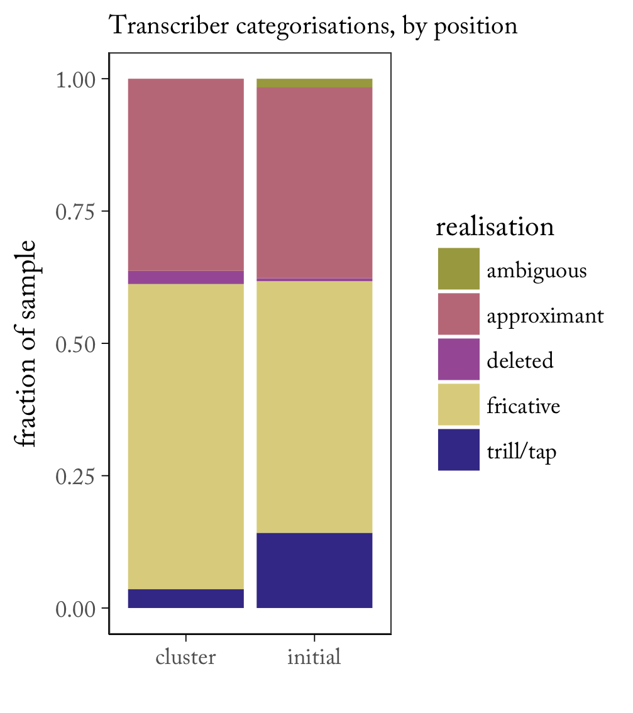
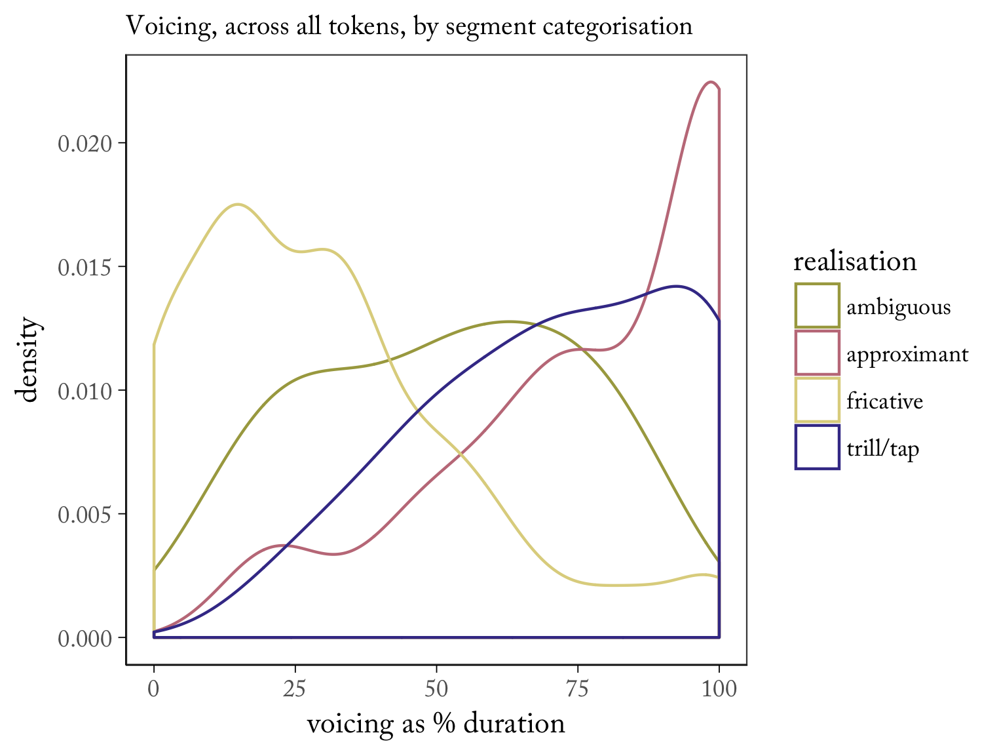
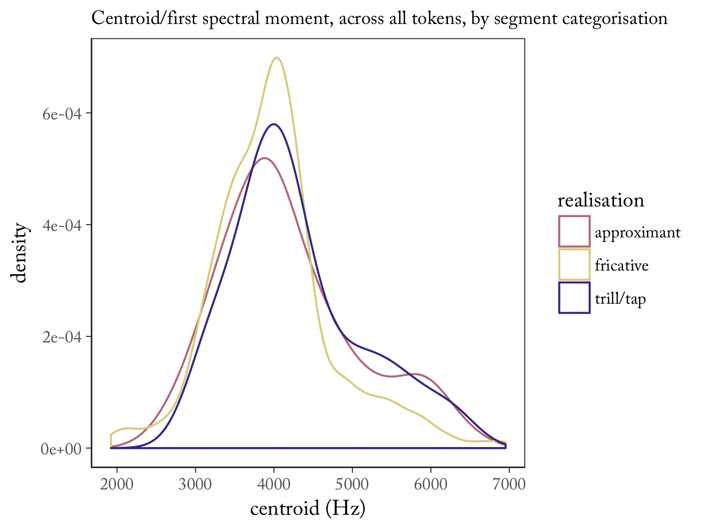
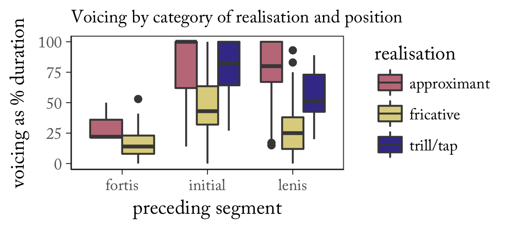
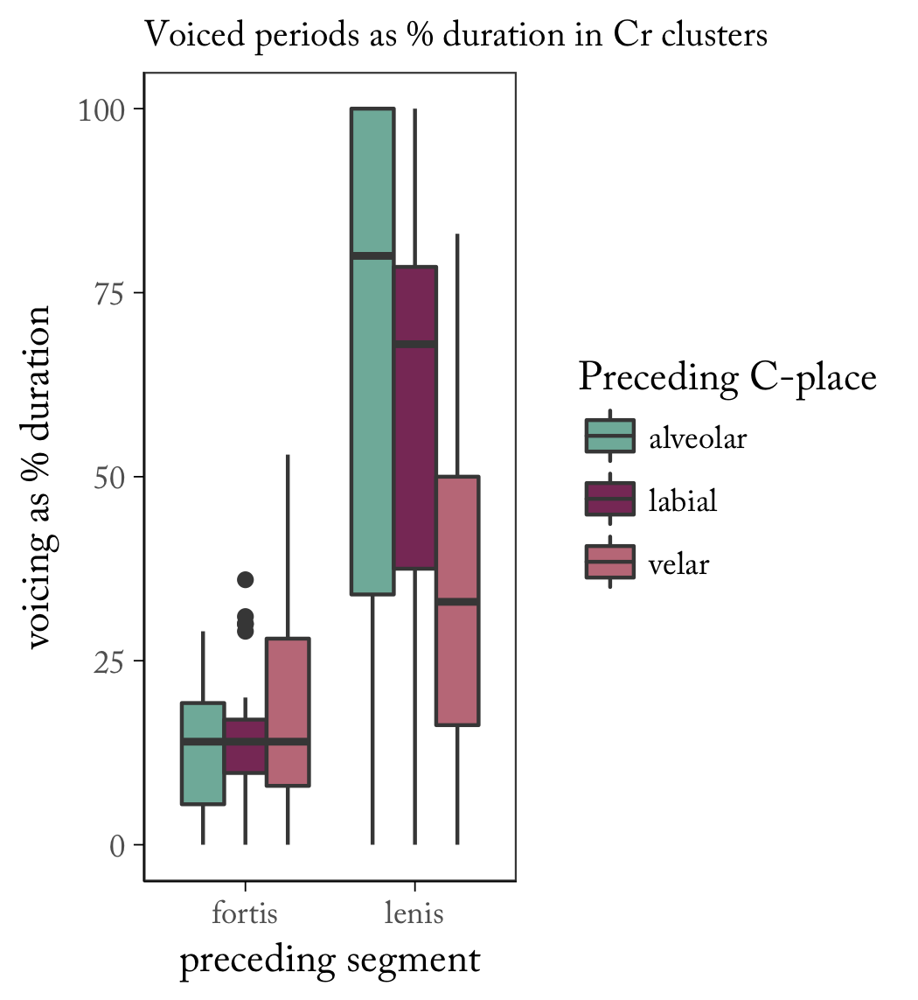
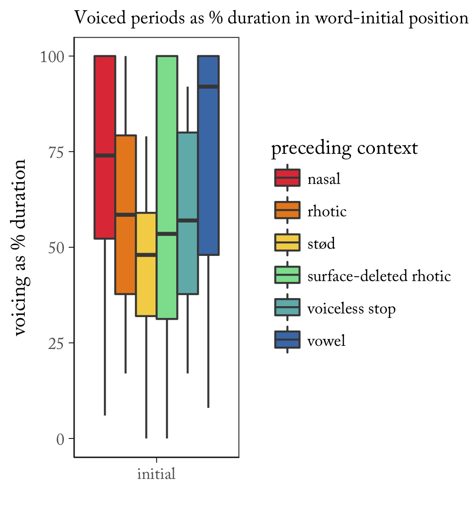
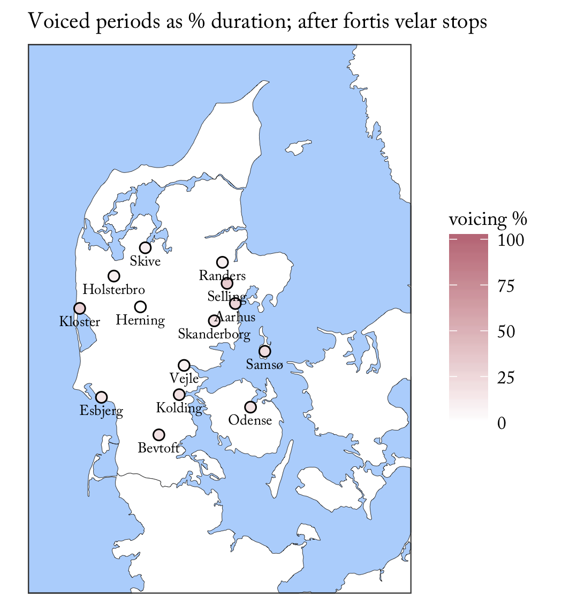

Deepthi Gopal (Cambridge)
Míša Hejná (Aarhus)
Pavel Šturm (Prague)
Standard varieties of both Norwegian and Swedish have flap [ɾ]; backed phonetic realisations are associated with specific dialect regions.
In both cases: variation in the relationship of uvular rhotics to phonological rules targeting rhotics (typically pattern with alveolar rhotics in Norwegian retroflexion, typically block Swedish retroflexion).
Both Norwegian and Swedish uvular [ʁ] have been associated with 'Danish'.
Danish itself:
Grønnum 1997 (illustration of the IPA): only makes claims about the Copenhagen standard, but there gives [ʁ] (or devoiced χ). Similar description in Basbøll 2005: [ʁ~ʁ̞] and, citing Grønnum 1998 (pedagogical material), voiceless [χ]. But Ladefoged & Maddieson (1996: 323): [ʕ̞], Ladefoged & Johnson (2011/6th ed.): pharyngeal approximant.
General complications: (historical?) rhotics and other C are much more frequently deleted & lenited than in other Scandinavian languages, further interactions between (intervocalic/coda) rhotic deletions and final C glottalisation & pharyngealisation. The Copenhagen suburb of Amager is [ˈɑmɑːˀ], and an Amager resident (an amagerer) is [ˈɑmɑːˀɑ]. Seems to have been prior to the spread of new rhotic realisations; 'best' tokens are often initial Cr clusters.
A bit of motivation for considering Jutland:
Examples that follow: recordings from the archives of the Center for Dialect Research @ Copenhagen University); collected for traditional dialectological purposes, so very conservative speech of non-mobile rural older males.
| Frankrike 'France' [r] | |
| bro 'bridge' [ʁ] |
| trær 'tree' [r] [r̥] | |
| frugt 'fruit' [r̥] |
30 female, 30 male native speakers of Danish, age 18–41; recorded in a soundproof booth at the Aarhus University phonetics laboratory. This talk deals with 20 female speakers, birthyears 1985 – 1996. Metadata: age, sex, place of origin.
Speakers read a version of the Rainbow passage (Fairbanks 1960), translated1.
1 by Anna Jespersen, proofread by Sten Vikner. Thank you!
The version of the rainbow passage above contains 17 instances of /r/ in tautosyllabic clusters, 22 instances of word-initial /r/; work on medial /r/ is ongoing & the problem of identifying systematic contexts for deletion is not trivial.
| item | context | preceding C in cluster |
| prisme | cluster | fortis |
| krukke x 2 | cluster | fortis |
| fra x 2 | cluster | fortis |
| krig | cluster | fortis |
| betragtede | cluster | fortis |
| skrev | cluster | fortis |
| stråler | cluster | fortis |
| primære | cluster | fortis |
| item | context | preceding C in cluster |
| opbrydning | cluster | lenis |
| aldrig | cluster | lenis |
| hebrærne | cluster | lenis |
| Grækerne | cluster | lenis |
| bro | cluster | lenis |
| dråberne x 2 | cluster | lenis |
| grønne x 2 | cluster | lenis |
| bredden | cluster | lenis |
| bredt | cluster | lenis |
| grønt | cluster | lenis |
| item | context | preceding C in cluster |
| rammer | word-initial | |
| resultatet | word-initial | |
| regnbue x 5 | word-initial | |
| rund | word-initial | |
| regnbuen x 7 | word-initial | |
| regn | word-initial | |
| regnen | word-initial | |
| refleksion | word-initial | |
| refraktion | word-initial | |
| rødt x 3 | word-initial |
Segmentation at the onset of visible frication noise or formant structure, categorised by DG and MH auditorily (which 77% agreement) & on inspection of the signal.
| F 1996, Kolding | |
| F 1985, Vejle | |
| F 1985, Skive |
Categorisations are variable.
Any given categorisation can correspond to a segment which is voiced or devoiced; high- or low- intensity; and (for non-fricative labels) fricated or un-fricated.
|  |  |
With all tokens pooled together, the major discriminant so far is voicing.
– which also corresponds to a distinction between word-initial and cluster-internal contexts and between fortis-C+r and lenis-C+r clusters.
|  |  |
The distribution of voicing in clusters also looks essentially geographic – shown here for velars, with which variation is greatest.
|  |
This is very much under construction, so all thoughts are welcome.